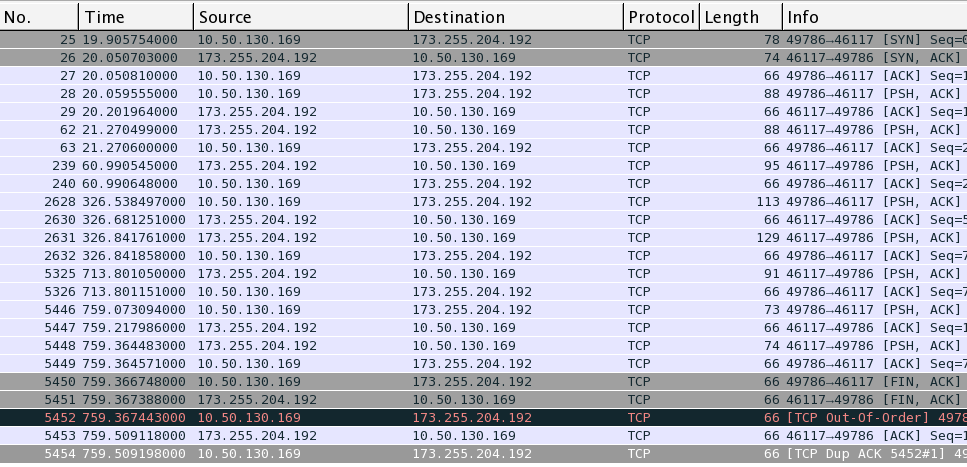

We used Wireshark to sniff all the TCP packets, which was send and received on our client. There is no connection between our Client and our server when we start the Client so we can expect to see a Three Way Handshake among the first three packets, when we attempt to connect. First we connected to the server using the CONNECT# command in our client. It was easy to see the packet send and the expected (Online#) packet received. When another user logged in, our Client again received the packet containing the ONLINE# command along with the list of online users. We also tested the SEND# command, by sending a message both from and to our Client and received the expected answer from our Server. Upon closing our Chat Client the CLOSE# command was send to our Server, which send back a CLOSE# command after which a graceful shutdown was done. The last packets received contains the expected FIN ACK packets.
The image above shows the above mentioned test. The text left of the image describes the content of the packets. The image below shows the content as sniffed by wireshark.
The image above depicts the flow diagram. It is easy to spot the three way handshake, psh, ack and corresponding acks and the final FIN ACK teardown.
In the client application, every class has its own interface. An observer pattern has been implemented in the GUI class and clientSide class, which calls for an interface solution. This makes it possible, not having the Swing interface “blocked”, while waiting for a response(in this case a message) from the server. Originally, the program only had one interface: ”ViewListener”, which was implemented in the GUI. We then added the SocketClass, which contains the thread that listens for inputs from the server. We thought the best way to tell ClientSide that a new message had arrived, was to contain it as an observer of SocketClass. That way, we can do it, without SocketClass knowing anything about ClientSide class. The SocketClass also implements an interface: “SocketIF”. This way, it’s easier to use another connector class in the program, thous it implements the SocketIF interface. This also makes it easier to set op a mock.
The ServerSide project gets started from the class ServerExecutor. This class starts both the ChatServer and the WebServer. Overall we’ve tried to create a layer of abstraction by making interfaces. This also makes it easier for us to test(making mockups). We’ve tried to aim for high testability in all our classes, hence it has a lot of responsibilities. The server logs to a file, using a FileHandler. This way, we can log everything that happens on the server.